7 Predictive modeling
Model
Create and optimize machine learning models for classification and regression tasks.
Calculate
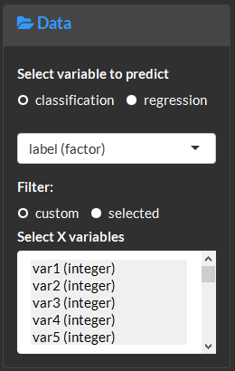
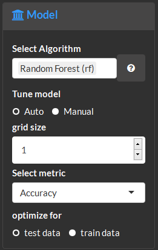
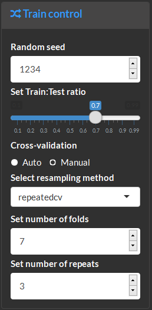
Model methods amd performance summary. For eaxample, this show three models were fitted, RandomForest (rf), Partial Least Squares projections to latent structures (pls) and radial kernel Support Vectoem Machine (svmRadial). The top performing model (rf) is highlighted in green.
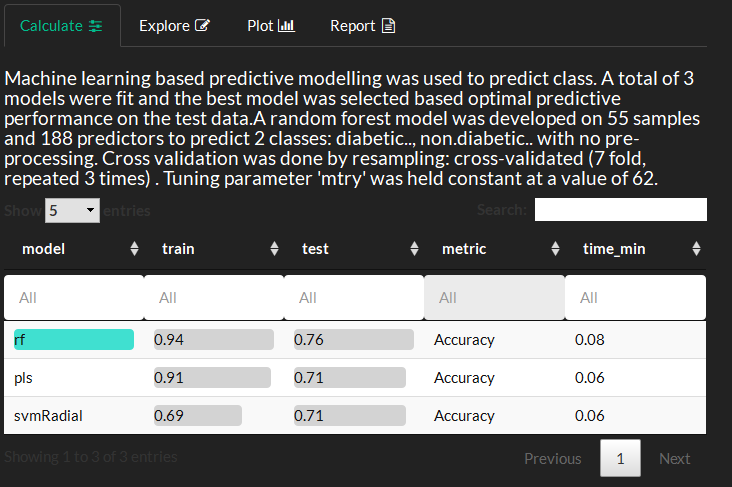
Plot and Explore
Model performance for the training and test data and training time can be compared. The y-axis shows the selected model performance metric and x-axis the training time.
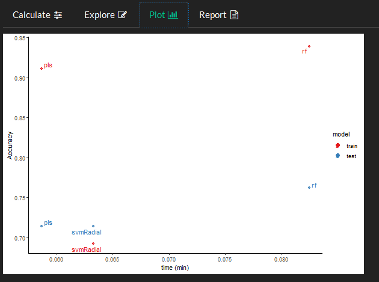
This plot is used to visualize the impact of hyperparameters on model performance.
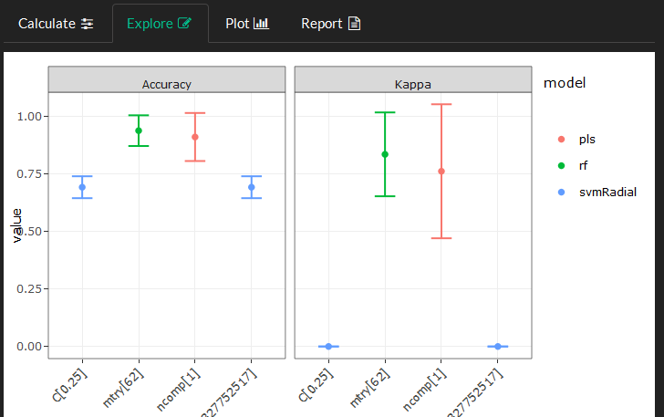
Identify the proportion of miss classified samples for classification models using a confusion matrix. Optionally show actual counts or percent for correct and incorrect classifications.
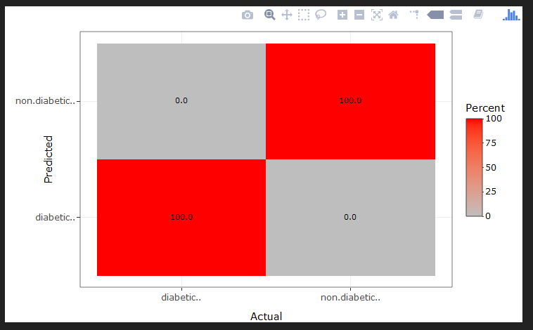
Visualize variable’s importance or contribution to the model’s performance. Importance for multiple models is calculated based weighted metric of the model’s performance and each variables importance in the model. Importance based on multiple models displays the variables consensus rank (y-axis) across all models and the actual importance in the single highest performing model (x-axis).
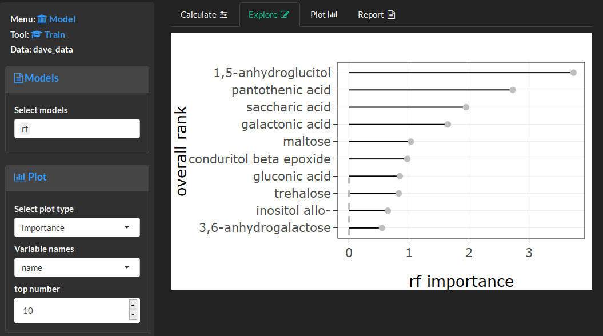
Feature selection
Feature selection is used to identify variables which maximize model performance. Optimal variables are identified using recursive feature elimination wherein many models are built from subsets of variables and an optimal model is identified based on which subset yielded the highest performing model.
Calculate
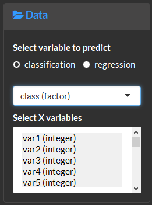
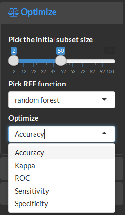
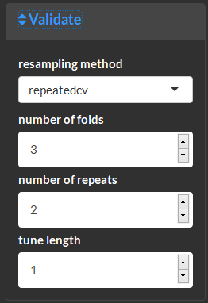
View feature selection methods and results.
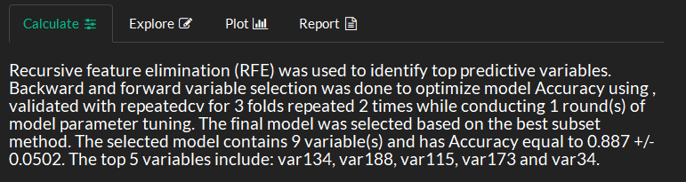
Plot and Explore
This visualization displays model performance (y-axis) based on the subset of variables (x-axis). The optimal model is highlighted in red. The plot controls can be used to specify which model metric will be used for the visualization (use calculate to optimized subsets for that metric). The optimal variables can be selected based on the subset function. Options include PickSizeBest which specifies the subset which maximized or minimized the chosen performance metric or PickSizeTolerance which allows for models with less parameters (variables), which are also worse than the optimal model. The accepted decrease in performance is specified as a percent of the metric in tolerance.
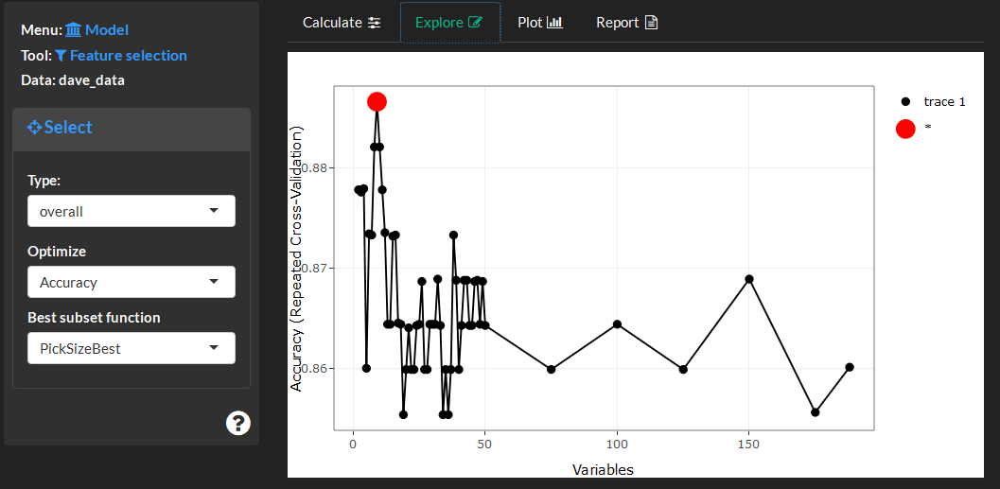
This visualizations shows the selected variables (red) importance compared to those which were removed (blue).
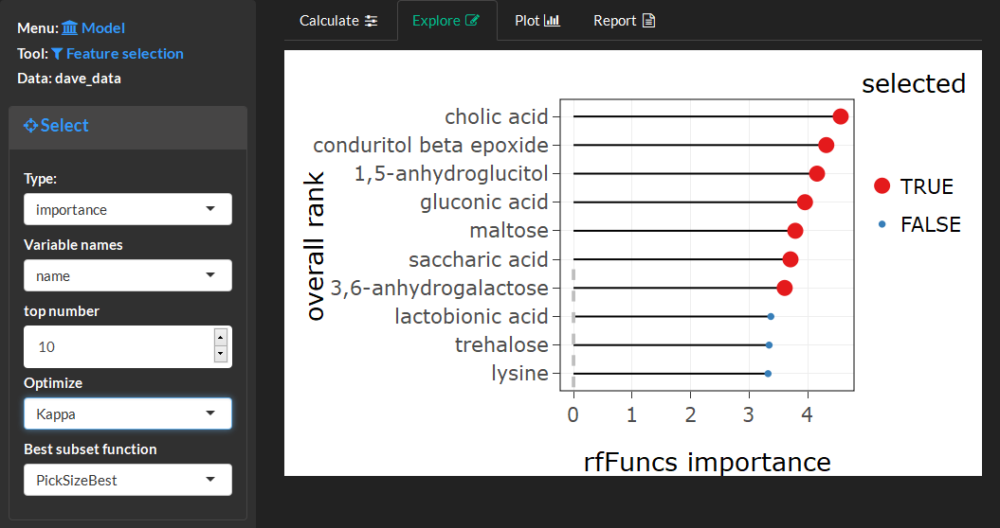
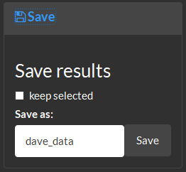